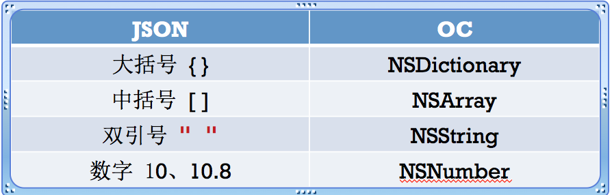

OC中JSON和XML的解析
JSON
JSON是一种轻量级的数据格式，一般用于数据交互。服务器返回给客户端的数据一般都是JSON或者XML，当然除了下载文件。
JSON的格式很像OC中的字典和数组。
{"name": "jack", "age": 10}
{"names": ["jack", "rose", "jim"]}
标准的JSON格式key必须用双引号。要想从JSON中挖掘具体的数据，需要对JSON进行解析。JSON转换为OC数据类型：

在iOS中，JSON的常见解析方案有四种
- 第三方库：JSONKit、SBJson、TouchJSON
- 苹果自带：NSJSONSerialization(性能最好)
NSJSONSerialization的常见方法
JSON数据-OC对象
+(id)JSONObjectWithData:(NSData )data options:(NSJSONReadingOptions)opt error:(NSError )error;
OC对象-JSON数据
+(NSData *)dataWithJSONObject:(id)obj options:(NSJSONWritingOptions)opt error:(NSError **)error;
XML
XML全称Extensible Markup Language。和JSON一样，也是常用的数据交互格式。一般称作XML文档。
XML的解析方式有两种：
- DOM：一次性将整个XML文档加载进内存，比较适合解析小文件
- SAX：从根元素开始，按照顺序一个元素一个元素往下解析，比较适合解析大文件。
在iOS中，解析XML的手段有很多。苹果原生的有NSXMLParser。SAX方式解析，使用简单。第三方框架有libxml2和GDataXML。libxml2使用纯C语言。同时支持DOM和SAX方式解析。GDataXML支持DOM方式解析，是有Google开发的。解析小文件用GDataXML。
NSXMLParser的使用方法
// 传入XML数据，创建解析器
NSXMLParser *parser = [NSXMLParser alloc] initWithData:data];
// 设置代理，监听解析过程
parser.delegate = self;
// 开始解析
[parser parse];
NSXMLParser采取SAX方式解析，特点是事件驱动，下面的情况会通知代理。
- 当扫描到文档（Document）的开始与结束
- 当扫描到元素（Element）的开始与结束
当扫描到文档的开始时调用（开始解析）
- (void)parserDidStartDocument:(NSXMLParser *)parser
当扫描到文档的结束时调用（解析完毕）
- (void)parserDidEndDocument:(NSXMLParser *)parser
当扫描到元素的开始时调用（attributeDict存放着元素的属性）
- (void)parser:(NSXMLParser *)parser didStartElement:(NSString *)elementName namaspaceURI:(NSString *)namespaceURI qualifiedName:(NSString *)qName attributes:(NSDictionary *)attributeDict;
当扫描到元素的结束时调用（attributeDict存放着元素的属性）
- (void)parser:(NSXMLParser *)parser didEndElement:(NSString *)elementName namaspaceURI:(NSString *)namespaceURI qualifiedName:(NSString *)qName;